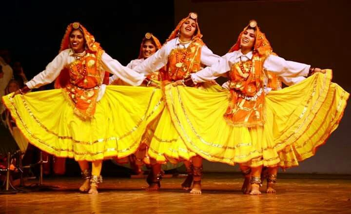

Exploring India's Culture and Heritage
Classical Dance Forms of India
Phag Dance is a traditional folk dance from the Punjab region of India, performed mainly during the Phag festival, which marks the end of winter and the arrival of spring. The festival is celebrated in the month of Phagun (February-March) in the Hindu calendar. The dance is a way for people to express their joy and gratitude for the harvest, as well as to welcome the new season. Phag dance involves lively footwork, energetic movements, and often, group participation. Dancers wear colorful costumes and perform in circles or rows, accompanied by the rhythmic beats of traditional dhol, tabla, and other instruments. The dance not only celebrates the changing seasons but also strengthens community bonds. Let me know if you need m
Phag Dance is a vibrant and energetic folk dance from the Punjab region of India, traditionally performed during the Phag festival. This dance marks the arrival of spring and celebrates the changing seasons, especially the transition from winter to warmer weather. The festival, observed in February or March, is a time to honor the earth’s fertility and the harvest season. The dance itself is characterized by rhythmic foot stamping, vigorous spinning, and joyous movements, with dancers often forming circular formations. The dancers, dressed in bright, traditional attire, are accompanied by the sounds of the dhol and tumbi, which provide an energetic backdrop to the festivities. Phag Dance is not only a celebration of nature but also an expression of the community's unity and spirit.
Phag Dance has its origins in the Punjab region of India, and its history is deeply connected to the Phag festival, which celebrates the arrival of spring and marks the end of winter. The word “Phag” comes from the Phagun month in the Hindu calendar, typically falling in February or March, which is considered an auspicious time for new beginnings, particularly related to agriculture. Historically, the Phag Dance was performed by the agrarian communities to give thanks for the harvest and pray for future abundance. The dance was a part of the community’s agricultural rituals, where people would come together in celebration after the sowing season, hoping for a bountiful crop in the coming months. It was particularly significant for the people of Punjab, where agriculture plays a vital role in the economy and daily life. The Phag Dance has been passed down through generations as part of the rich Punjabi cultural heritage. Over time, it has evolved from its ritualistic origins into a joyful and community-driven celebration, often performed at festivals, weddings, and cultural events. While the festival's religious and agricultural roots are still honored, the dance has become a broader expression of unity, joy, and cultural pride. Today, the Phag Dance is performed not only in India but also by the Punjabi diaspora around the world, symbolizing the collective spirit and celebration of the changing seasons.
The music of the Phag Dance is a vibrant and energetic aspect of the celebration, with rhythms that perfectly complement the lively movements of the dancers. The dhol—a large, double-headed drum—plays a central role in the music, providing a powerful beat that drives the dance. The rhythms of the dhol are accompanied by other traditional instruments such as the tumbi, a string instrument that produces a bright, sharp sound, and the chimta, a percussion instrument made of iron with jingling bells that create a rhythmic, metallic sound. These instruments together create an infectious rhythmic atmosphere that encourages high-energy, synchronized dancing. The vocal music often consists of folk songs that are sung by the dancers or a group of musicians, celebrating the harvest, the arrival of spring, or other cultural themes. The singers use call-and-response patterns, engaging the audience and performers in a lively dialogue. Flutes, harmoniums, and sometimes sarangi (a traditional string instrument) can also be added to enhance the melody and provide a fuller musical experience, blending rhythm and melody. The music's energetic beats and melodic tunes combine to make the Phag Dance a joyous, communal celebration of life and nature.
The costumes worn during the Phag Dance are colorful, vibrant, and reflect the traditional attire of the Punjab region. Both men and women dress in attire that is suited to the celebratory and energetic nature of the dance. For women, the costume typically consists of a long, flowing salwar kameez or lehenga choli made from bright fabrics such as cotton, silk, or chiffon, often adorned with intricate embroidery or mirror work. The dupatta (scarf) is an important part of the ensemble, and women may drape it over their shoulders or head as they move in energetic spins and dances. They also wear colorful bangles and jewelry, adding to the festive appearance. For men, the costume usually includes a kurta (loose tunic) and salwar (baggy trousers), paired with a pagri (turban), which is an important cultural symbol. The kurta may be adorned with bright embroideries or patterns, and the men sometimes wear sashes or belts around their waist. The chadar (shawl) is another element that adds flair to their look. Both men and women wear footwear like juttis (traditional Punjabi shoes) that are comfortable for dancing. The bright colors, combined with the flowing nature of the clothing, enhance the dynamic and energetic movements of the dancers. The costumes reflect the joyous spirit of the festival and the vibrant culture of Punjab, making the dance a visual spectacle as much as a musical and rhythmic performance.